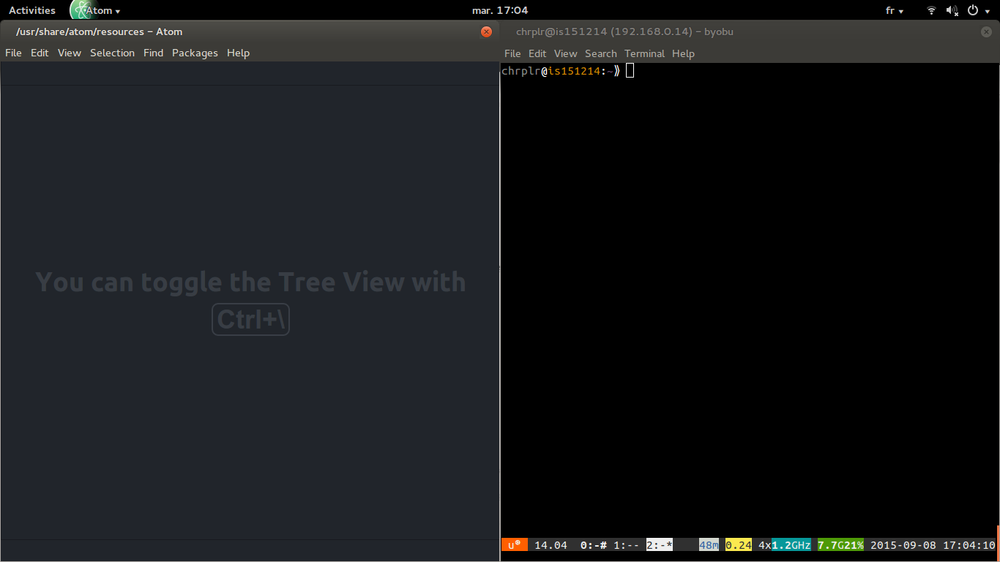

Python in a nutshell
Christophe Pallier
You can use Python in two ways:
- Interactively, e.g. by launching
ipython in a terminal, and typing python commands that are interpreted and executed when you press ‘Enter’.
- Open a command line window (a.k.a. Terminal):
- Type
ipython on the command-line and press Enter:
- When you terminal looks like the one of the right, you are “talking” to ipython. Enter the following commands:
import turtle
turtle.circle(50)
turtle;forward(100)
turtle.circle(50)
turtle.right(90)
turtle.forward(100)
turtle.right(90)
turtle.heading()
This way of using Python is fine if you need to quickly test an idea. But as soon as you quit ipython (by pressing Ctrl-D), you lose all traces of what you have done. To avoid that, you want to use the Edit-run approach
Using a text editor, e.g. atom, you write a python script, that is, a series of commands, that you save in a file; then you gie this file to interpret to Python. Here is how:
- Open a Text-Editor (e.g. Atom) and a Terminal window side-by-side:

- Create a
New File in the Editor and enter the following text:
import turtle
turtle.circle(50)
turtle.forward(50)
turtle.left(120)
turtle.forward(100)
turtle.left(120)
turtle.forward(100)
turtle.left(120)
turtle.forward(50)
- Using ‘File/Save as’, save the this text under the filename
myscript.py in your personal (home) directory
- run with a python interpreter, by typing
python myscript.py on a command line of the Terminal. Try it now.
Important: you must make sure that the current working direcoty of the terminal is the same directory where the file myscript.py has been saved. Otherwise, you will get an error message such as ‘No such file or directory’. To fix this problem, you must use the ‘cd’ command to navigate the directory structure.
Remarks:
You can learn more about Turtle graphics by reading the documentation at https://docs.python.org/2/library/turtle.html
there exist a third approach which combines interactivity and persistence — the ipython notebook. Like Mathematica, handy for numerical processing.
Create a script hello.py in the editor, save it and run it on the command-line:
name = raw_input('What is your name?')
print('Hello ' + name + '!')
Concepts: string constant, variable (name), affectation, string concatenation with ‘+’
. . .
# multiplication by successive addition
a, b = 10, 5
sum = 0
while (a > 0):
sum = sum + b
a = a - 1
print(sum)
Concepts: multiple affectation, modifying a variable, while loop, indentation for blocks,
Do the following in interactive mode (ipython):
type(10)
type(10.5)
type('bonjour')
a = 20
type(a)
Concept: types
print(10 + 5)
print("10" + "5")
print("10" + 5)
10 is an integer, 10.0 is a float, “10” is a string. It is possible to convert from one type to another:
print('Il y a ' + str(10) + ' ans...')
print(int("10"))
. . .
num = raw_input('entrez en nombre')
print(num)
Question: num est-il un nombre ou une chaîne de caractères?
Exercices: faire les exercices 2.3 et 2.4 de How to think like a computer scientist?
type([1, 2, 3])
type(['a', 'b', 'c'])
seq1 = ['jean', 'marie', 'paul']
seq1[0]
seq1[1]
seq1[2]
dico = {'windows':0, 'macos':0, 'linux':1}
type(dico)
dico['windows']
dico['macos']
dico['linux']
for x in [1, 2, 3, 4]:
print(x*x + 2*x + 1)
Concept: for loop
. . .
numbers = [1, 2, 5, 10]
y = [(x*x + 2*x + 1) for x in numbers]
y
concept: lists (or sequences)
See http://effbot.org/zone/python-list.htm
. . .
for _ in range(100):
print('All work and no play makes Jack a dull boy')
Concepts: range to generate a list of numbers, ‘for’ loop, indentation of instuction block
. . .
for name in ('Jack', 'John', 'Tim'):
for _ in range(10):
print('All work and no play makes ' + name + ' a dull boy!')
Concepts: list of strings, double imbrication
Exercice: write a program that computes the sum of the first n integers (1+2+…+n)
n = 100
for i in range(1, n+1)
sum = sum + i
print(sum)
Type this program in a text editor, save it as a Python script (with extension .py) and run it.
# guess a number
import random
target = random.randint(1, 100)
print("I am thinking about a number between 1 and 100")
guess = raw_input("Your guess? ")
while guess != target:
if guess < target:
print("Too low!")
else:
print("Tow high!")
guess = raw_input("Your guess? ")
print("You win! The number was indeed " + target)
- A program typically consists in a series of instructions (aka commands).
- The main types of instructions are:
- Function calls
- Assignments to variables
- Testing and branching instructions
Note that Python scripts also often contain sections of module importation and function definitions (to be explained later)
from math import sin, pi
print(sin(pi/2))
from turtle import circle, forward
circle(50)
forward(100)
circle(50)
The arguments of functions can be constants, variables, other function calls.
print(34)
myvar = 36
print(myvar)
print(math.sin(myvar))
a = 24
b = 'bonjour'
c = ['aga', 'bobo', 'glop']
- variables are names that point to objects in memory
a = 3
b = a
print a, b
a = 4 # a points to a new object
print a, b
a = [1, 2, 3]
b = a # points to the same object (a list)
c = a[:] # makes a copy
a[0] = 10
print a, b, c
response = 'no'
if response == 'ok':
print 'accepted'
else:
print 'rejected'
n = 0
while n < 10:
n = n + 1
print n